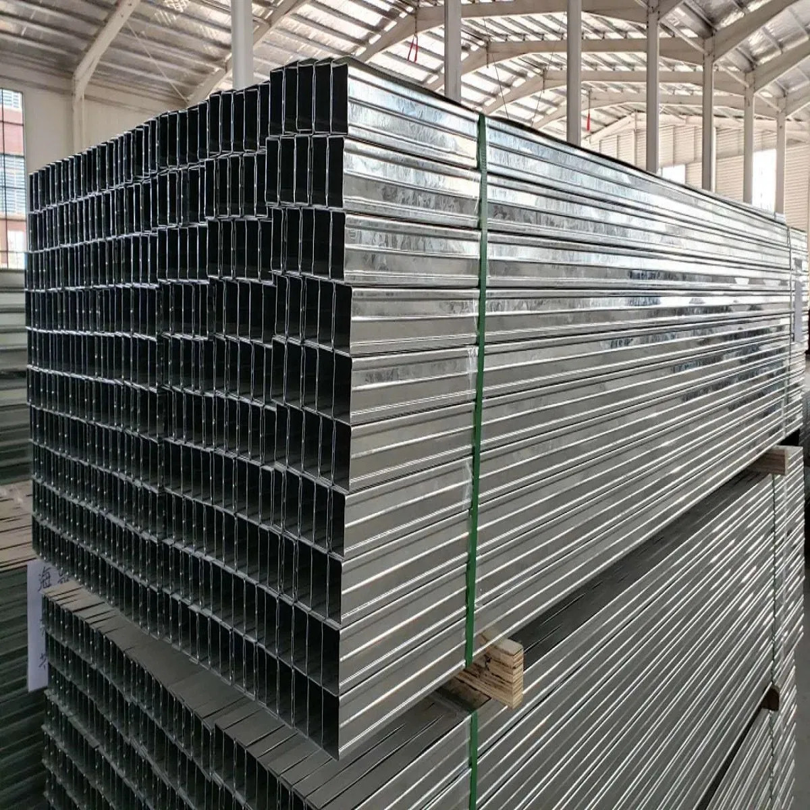

Perfiles metálicos para drywall

Perfiles galvanizados que forman canales y montantes para sostener placas de yeso. Se utilizan en tabiques y cielos rasos, con separaciones y fijaciones definidas por el sistema constructivo.